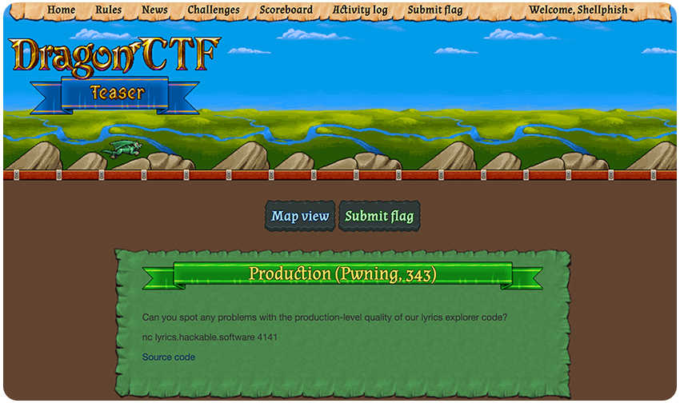
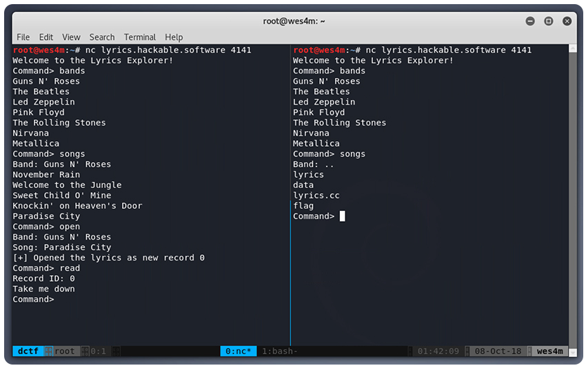
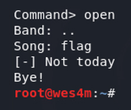
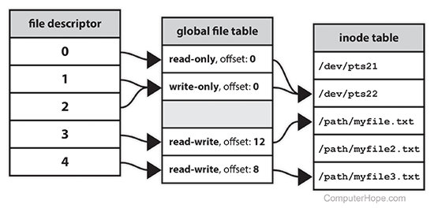

حل تحدي Production - DragonCTF
من مشاركتي مع فريق @Shellphish إنتهت المسابقة بحصول الفريق على المركز الأول وكان هذا أحد التحديات الممتعة والمليئة بالمعلومات.
سأقوم بشرح لطريقة حل التحدي وشرح المعلومات المهمة في الحل
صورة من التحدي

لمن ليس لديه معلومات ماهي تحديات CTF , Capture the flag هي طريقة ممتعة ومن أفضل الطرق بل أعتبرها في نظري من أهم الطرق في تعلم طرق الإختراق والهندسة العكسية والتشفير وغيرها من عمليات أساسية في الأمن السيبراني لمعلومات أكثر يمكنك قراءة شرح ممتاز من هنا
التحدي
بداية أشجعك على محاولة حل التحدي بنفسك. الوقت المحدد للـ CTF قد إنتهى لكن السيرفر لازال يعمل من هنا
nc lyrics.hackable.software 4141
في حال تعطل السيرفر أو إغلاقه ورغبتك في إكمال التحدي يمكنك عمل كومبايل للكود بإستخدام g++ وتأكد من إضافة فلاق NDBG- ثم إستخدم netcat مع فلاق e- لتنفيذ الإتصال على جهازك
كود التحدي
الحل
نبدأ بتجربة سريعة على السيرفر بناءَ على الأوامر الموجودة في الكود

نلاحظ من تجربة عشوائية بأن طريقة عرض السيرفر للبيانات هي عبارة عن ملفات بحيث عند طلب عرض الفرق bands يقوم بعرض قائمة بالفرق والتي هي عبارة عن مجلدات وعند طلب قائمة الأغاني يقوم بسؤالك عن إسم الفرقة. في هذه الحالة هو فعليآ إسم المجلد لذلك عند وضع “..” مكان إسم الفرقة قام بعرض الملفات الموجودة بالخلف والتي بدورها تحتوي على ملف العلم
نلاحظ أيضا أن طريقة عمل الكود هي بفتح الملف ثم قراءته وعرض محتواه لذلك يتضح لنا أنه بإمكاننا قراءة ملف العلم وحل التحدي بكل بساطة
ولكن!

هذه نتيجة محاولة فتح ملف العلم بعد قراءة كود السيرفر عدة مرات بحثآ عن طريقة لقراءة العلم نلاحظ وجود ثغرة تمكننا من تسريب بيانات من ملف آخر في الفنكشن التالي
يعمل السيرفر عن طريق قراءة سطر من كلمات إغنية محددة في كل مرة نقوم بإرسال أمر read ولكن عن وصوله لنهاية الملف ستقوم الفنكشن بإرجاع -1 وبدورها سنتمكن من إستغلال هذه النقطة في : تقوم الفنكشن بالتأكد من أن عدد البايتات التي تم قراءتها أكبر من صفر ثم التأكد من عدم وجود كلمة DrgnS في البيانات وهي جزء من العلم بحيث حتى لو تمكنا من قراءة العلم ستوقفنا الفنكشن بمجرد قراءتها لهذه الكلمة وهذا عائق اخر. ولكن اذا قمنا بقراءة أحد ملفات الأغاني الى ماقبل نهايته ثم قمنا بقراءة ملف العلم ستقوم الفنكشن بوضع بايتات العلم في الذاكرة الموجودة buffer وستتوقف عند قراءتها لكلمة DrgnS لكن لن يتم إغلاق الإتصال بدورنا يمكننا بعد ذلك قراءة اخر سطر متبقي من الإغنية فستقوم الفنكشن بإرجاع -1 بدورها ستتجاوز شرط التأكد من الكلمة وستقوم بطباعة البفر بالكامل محتويا على بيانات سابقة بدون تصفير البفر uninitialized memory
يمكنك عمل كومبايل للكود وصنع ملف علم وهمي بإسم آخر للتأكد من أنك ستتمكن من قراءه بهذه الطريقة. الآن أصبح لدينا طريقة لقراءة العلم متجاوزين أحد العوائق وهي التأكد من كلمة DrgnS ولكن لازلنا عالقين. لأنه من الأساس لن نستطيع من فتح الملف flag لقراءة محتواه بسبب وجود شرط يوقفنا من ذلك
بحثآ عن طريقة لفتح الملف نلاحظ وجود حد أقصى لبعض الأمور في بداية الكود عن طريق دالة setrlimit وهي دالة مهمة في نظام لينكس تقوم بتحديد الريسورس المتوفرة لعملية محددة وتتحكم فيها النواة لمعلومات أكثر https://www.gnu.org/software/libc/manual/html_node/Limits-on-Resources.html
أهمها هوRLIMIT_NOFILE فهذا يضع حد أقصى لعدد الملفات التي يمكن للعملية فتحها يتم تحديد الحد بناءا على عدد الـ file descriptors (fd) المفتوحة وهو أمر سيتم شرحه لاحقآ في الموضوع ولكن يوجد حد أقصى آخر غير مرتبط بعدد الـ fd الحد الأقصى هنا هو 32 ولكن يوجد شرط آخر في الكود
static bool open_lyrics() {
// Don't allow opening too many lyrics at once.
if (globals::records.size() >= 16) {
return false;
}
هنا حد آخر يجعل الحد الأقصى ١٦ ملف فقط بعد بحث وتجربة عدة ثغرات وطرق للتمكن من فتح الملف نلاحظ وجود ثغرة هنا بحيث لو تمكنا من فتح ملف symbolic link سيتم فتحه وإظهار رسالة خطأ ولكن سيتم إعادة true بدون إغلاق الإتصال وأيضا لن يتم إغلاق الملف في نظام لينكس هو ملف يقوم بإيصالك مباشرة بملف آخر بنفس مبدأ ملفات shortcut في نظام وندوز symbolic link
يعمل نظام لينكس بمايسمى file descriptors وهو رقم يتم وضعه لكل ملف تقوم العملية بفتحه عن طريق open ويمكنك تطبيق عمليات على ملف محدد عن طريق رقمه مثل read, write

ومعاملة بعض أجزاء النظام كملفات هي جزء من فلسفة نظام لينكس فأيضا عند بدء عملية مرتبطة بالترمنل tty في لينكس يقوم النظام بفتح ثلاث streams وتخزين file descriptors لكل واحد منهم وهم
0: stdin 1: stdout 2: stderr فعند إستدعاء دالة read على الـ fd 0 هي بالضبط عملية إدخال بيانات من المستخدم للعملية وكذلك عند عمل write للـ fd 1 هي عملية إخراج أو طباعة بيانات للمستخدم من العملية.
بعد بحث مطول عن ملف symbolic link محاولين تنفيذ الثغرة لفتح ملف بدون إغلاقه لن تتمكن من الوصول لأي ملف على النظام نظرا لشروط تحبط عمليات الـ path traversal مثل محاولات البحث عن طريق إستخدام “" أو “ .." وغيرها وهي إستغلال مناسب في هذه الحالات نظرآ لأنه يتم وضع مدخلات المستخدم مع مسار الملف للوصل لمكان محدد ولكن المبرمج هنا قام بالحماية من هذه الهجمات عن طريق عمل فنكشن يقوم بالتحقق من مدخلات المستخدم sanitize_path لذلك لابد من وجود طريق آخر
ماذا لو قمنا بتجاوز الحد الأقصى للمفات التي يمكننا فتحها عند ذلك بكل تأكيد ستعيد الفنكشن فشل في فتح الملف وبذلك سيعتقد الشرط بأننا قمنا بمحاولة فتح ملف sym link ولكن يوجد شرط يقف في طريقنا فلن نتمكن من فتح ٣٢ ملف بسبب شرط الـ ١٦ ملف
فكيف يمكن تجاوزه ؟ نلاحظ وجود بعض شروط الـ assertions في الكود وهي شروط يتم وضعها لعمل testing للكود في حالة الـ developemnt ولكن من قراءة وصف التحدي والإسم توجد تلميحة فتنقسم عادة المشاريع البرمجية الى مرحلتين developemt, production في وقت الـ production يقوم الكومبايل بحذف جميع شروط الـ assert
بذلك نحصل على ثغرة غير ملحوظة. فشرط الـ ١٦ ملف يقوم بالتأكد عن طريق قياس حجم الفيكتور الذي تقوم العملية بزيادته عند فتح كل ملف بشكل رسمي ولكن. لو تمكنا من فتح الملف بشكل غير رسمي عن طريق إستغلال ثغرة الـ assert في أحد الشروط الموجودة سنتمكن من فتح أكثر من ١٦ ملف حتى يوقفنا شرط الـ ٣٢ وتكمن هنا
assert(close(globals::records[idx]) == 0);
بنفس شرط فحص الملف لوجود DrgnS سيتم إغلاق الملف بداخل assert وطباعة الخطأ ولكن. بما أنه تم إصدار الملف بكومبايلر في حالة production سيتم حذف هذا السطر من الكود. مما يمكننا من فتح ملفات عدة بشرط إن يحتوي الملف على كلمة DrgnS ليتم تنفيذ هذه المنطقة من الكود
بعد بحث في جميع كلمات الأغاني الموجود فالسيرفر لن تجد أي ملف يحتوي على هذه الكلمة ولكن. يمكنك ملاحظة سورس السيرفر موجود وهو أيضا يحتوي على الكلمة DrgnS يمكنك فتح العملية مرات عدة ولكن ستلاحظ توقف السيرفر فجأة وذلك بسبب حد أقصى اخر وهو حجم المخرجات
rlim.rlim_cur = rlim.rlim_max = 64 * 1024;
setrlimit(RLIMIT_FSIZE, &rlim);
في محاولة إخرى نرى وجود عملية السيرفر التنفيذية أيضا موجودة والذي بدوره يحتوي على كلمة DrgnS وحجمه أصغر يمكننا إستغلاله لتنفيد نفس العملية متجاوزين شرط الحجم
أيضا نلاحظ وجود حد أقصى اخر وهو
rlim.rlim_cur = rlim.rlim_max = 2;
setrlimit(RLIMIT_CPU, &rlim);
والذي سيحدد وقت لإستخدامنا لمواد السيرفر سنقوم بقراءة ملفات على شكل سطر في كل مرة مما ينتج عنه وقت طويل يؤدي لتجاوز هذا الحد بدوره سيغلق السيرفر الإتصال لتجاوز هذا الحد سنقوم بإستخدام أقل الملفات حجما
تنظيم الأفكار
بعد العثور على عدة ثغرات تمكننا من جمعها مع بعض للوصل للهدف المطلوب يمكننا الآن ترتيب أفكارنا والبدء بالإستغلال
لدينا 3 file descriptors يقوم النظام بفتحها بشكل أساسي الخطوة الإولى فتح ملف أحد الأغاني حتى ماقبل الحد الأقصى ١٥ مرة الخطوة الثانية نبدأ بفتح ملف السيرفر ١٣ مرة ونقرأه حتى نصل لكلمة DrgnS بذلك لن يتم إغلاقه وسيتم في كل مرة زيادة عدد الملفات المفتوحة الخطوة الثالثة الآن مجموع الملفات المفتوحة 3 + 15 + 13 = 31 يمكننا الآن البدء بقراءة أحد ملفات الإغنية حتى اخر سطر ونتوقف الخطوة الرابعة نظرآ لعدم زيادة العدد رسميآ يمكننا فتح ملف اخر للوصل ل ١٦ وذلك الملف سيكون هو ملف العلم سيتم فتح الملف عند السطر الأول لدالة open الآن أصبح لدينا ٣٢ ملف مفتوح وصلنا للحد الأقصى لذلك الإستدعاء الثاني للدالة سيفشل متجاوز أغلاق الملف وشرط التأكد من أنه ملف العلم
الخطوة الخامسة الآن يمكننا قراءة ملف العلم وهو رقم ١٥ ستفشل القراءة نظرا لوجود كلمة DrgnS لكن بالثغرة التي توصلنا لها تم تحميل بيانات العلم في الذاكرة وستظهر لنا رسالة خطأ الخطوة السادسة الآن يمكننا قراءة السطر مابعد الأخير من ملف الإغنية مؤديا لإرجاع -1 متجاوز شرط التأكد من وجود DrgnS وسيقوم بطباعة البفر بكامل مايحتويه ومن ضمنه بيانات العلم المحملة سابقآ
الحل النهائي
قمت بإستخدم أحد المكتبات الرائعة المبرمجة بالبايثون pwn لتسهيل الإتصال بالسيرفر وتطبيق العمليات بدون التدخل اليدوي
حل المشكلة
في الختام نرى خطورة إستخدام assert بدون حذر ودمجها مع بعض الأوامر المهمة قد يجعل الكومبايلر يتخلص منها معرضآ الملف التنفيذي لثغرات يمكن إستغلالها لاحقأ بالرغم من الشروط العديدة المصممة لمنعك من الوصول للعلم إلا أنه بمجرد وضع إستدعاء دالة إغلاق الملف خارج الـ assertion ستفشل الطريقة السابقة في الوصول له.